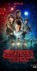

Stranger Things
Stephen Klancher
...has seen 17
...has seen 0.3 hours
...has not seen 0.3 hours

Timeline
Most Recent:
Chapter Nine: The Gate
First Unseen:
Chapter One: Suzie, Do You Copy? (# 18)
...has seen 17
...has seen 0.3 hours
...has not seen 0.3 hours
Timeline
Most Recent:
Chapter Nine: The Gate
First Unseen:
Chapter One: Suzie, Do You Copy? (# 18)
